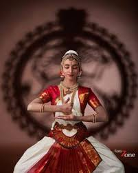

Exploring India's Culture and Heritage
Classical Dance Forms of India
Bharatanatyam is one of the oldest and most respected classical dance forms of India. It originated in Tamil Nadu, in South India, and is known for its elegant movements, precise hand gestures (mudras), and expressive storytelling. The dance beautifully combines rhythm, expression (bhava), music (raga), and movement (tala) to tell stories from Hindu mythology, especially about Lord Shiva, Vishnu, and Krishna.
Bharatanatyam is one of the oldest and most respected classical dance forms of India. It originated in Tamil Nadu, in South India, and is known for its elegant movements, precise hand gestures (mudras), and expressive storytelling. The dance beautifully combines rhythm, expression (bhava), music (raga), and movement (tala) to tell stories from Hindu mythology, especially about Lord Shiva, Vishnu, and Krishna.
Bharatanatyam is one of the oldest classical dance forms of India, with its roots going back over 2,000 years. It developed in the temples of Tamil Nadu, especially in the temples of Chidambaram, where it was performed as a part of devotional rituals. The dance was deeply connected to spirituality and worship, especially dedicated to Lord Shiva in his form as Nataraja, the cosmic dancer.
During British rule in India, Bharatanatyam and other temple arts began to lose their importance. The Devadasi system was criticized and misunderstood, and many temple dances were labeled as inappropriate or outdated. As a result, Bharatanatyam faced a decline and was at risk of disappearing.
Today, Bharatanatyam is performed by artists all over the world. It is taught in dance schools, cultural centers, and universities, and continues to evolve while staying true to its classical roots. Whether performed in temples, theatres, or international festivals, Bharatanatyam remains a symbol of India’s rich cultural and spiritual heritage.